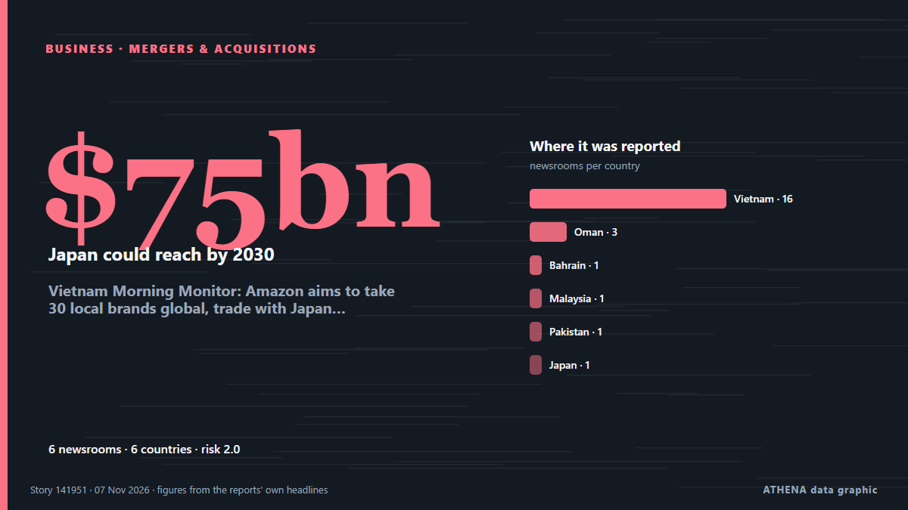

Empresas, compañías e inversión
PatrocinadoPresentado por  Cybernetics and Artificial Intelligence Lab Welcome to the Cybernetics and Artificial Intelligence Laboratory, established at the Department of Business Administration of the National and Kapodistrian University of Athens. The lab is headed by Professor Dimitrios Thomakos. The lab aims to do research that can be published in top venues. Our research uses tools and methods of Artificial Intelligence, and lies in the following areas: - Forecasting - Decision making - Cyber security - Finance We are always looking forward to collaborating with exceptional students!
Cybernetics and Artificial Intelligence Lab Welcome to the Cybernetics and Artificial Intelligence Laboratory, established at the Department of Business Administration of the National and Kapodistrian University of Athens. The lab is headed by Professor Dimitrios Thomakos. The lab aims to do research that can be published in top venues. Our research uses tools and methods of Artificial Intelligence, and lies in the following areas: - Forecasting - Decision making - Cyber security - Finance We are always looking forward to collaborating with exceptional students!
Los titulares se muestran en inglés, tal como se publicaron.

Fusiones y adquisicionesVietnam Morning Monitor: Amazon aims to take 30 local brands global, trade with Japan could reach $75bn by 2030
PM orders urgent probe into deadly fire at Hanoi school. de Tuoi Tre News
| 25 oct | 37 |
|---|---|
| 26 oct | 95 |
| 27 oct | 96 |
| 28 oct | 93 |
| 29 oct | 104 |
| 30 oct | 92 |
| 31 oct | 27 |
| 1 nov | 33 |
| 2 nov | 116 |
| 3 nov | 112 |
| 4 nov | 112 |
| 5 nov | 104 |
| 6 nov | 52 |
| 7 nov | 1 |
Alfa Laval agrees $700 million deal to acquire NAVTOR
Alfa Laval has announced it has entered into a definitive agreement to acquire software platform NAVTOR for $700 million, marking what the company describes as one of its ‘most significant… de Bunkerspot
Tinubu recalls Mobil days, calls Akwa Ibom home
* Ekiti promises 90% votes for president at rally Deji Elumoye, Adedayo Akinwale in Abuja and Gbenga Sodeinde in Ado Ekiti President Bola Tinubu will depart Abuja today, November 6, for. de ThisDay (Nigeria)
Channel 4 axes Married At First Sight UK after review following misconduct claims
Channel 4 chief executive Priya Dogra also confirmed season six of the show, which was filmed earlier this year, would not be broadcast. de The Irish News (Belfast)
Zipline raises $1.5bn at $21.5bn valuation as Walmart adds 300 drone sites
Zipline has raised $1.5bn at a $21.5bn valuation, the drone delivery company announced on Thursday. de The Next Web
Hong Kong firms must innovate to compete in mainland China, trade chief says
Hong Kong companies can survive intense competition in mainland China by being innovative and maintaining high standards, the head of the city’s trade promotion body has said. de South China Morning Post
Soaring fuel costs hit profit at British Airways owner IAG
British Airways owner IAG has taken a hit to its profit due to “very high” jet fuel prices, which industry bosses have warned could force some airlines into collapse next year. de City A.M.
Ryder acquires Efficiency Enterprises
Ryder System has acquired Efficiency Enterprises, expanding its truck rental, leasing and maintenance network across the eastern United States. de Container News
Nintendo quarterly net profit drops as Switch 2 unit sales slow
TOKYO: Japanese gaming giant Nintendo reported a drop in quarterly net profit on Thursday as unit sales slowed for its Switch 2 console, but maintained its annual forecasts. de Business Recorder
Libya's top religious authority rules against wearing Nike clothes
The US company was named after the Greek goddess of victory, so the Dar al-Ifta said displaying its logo was unIslamic. de BBC News
Beef Giant JBS Faces Laundering Complaints
Campaigners filed 14 complaints in four European countries accusing JBS of laundering money tied to Amazon deforestation, which the company rejects. de The Rio Times
Australia’s oldest department store, David Jones, folds after 188 years
The brand's 38 physical stores and online site will continue to operate while receivers review its operations. de BBC Business
Lehmann Marine Converts Danube Passenger Vessel to Fully Electric
Lehmann Marine, a Sunlight Group company, has converted the MS SISSI passenger ship to fully electric from traditional diesel in collaboration with operator Donauschifffahrt Wurm & Noé and OSWAG… de MarineLink
Ocean the star as Maersk reports Q3 bump in revenue, but drop in volume
Maersk experienced a 27% year-on-year bump in its third-quarter revenues, hitting $18.1bn, buoyed by a sharp rise in container freight rates that more than offset a slight dip in volumes, prompting… de The Loadstar
Humble Robotics raises $51M for cabless hauler pilots
Humble Robotics raised a $51 million Series A to push its cabless, electric Humble Hauler into customer pilots, testing and early manufacturing for dock-to-dock freight. de FreightWaves
Armani heirs have no plans to sell fashion house to major companies — Reuters
The heirs intend to distribute a minority stake among several investors, thereby preventing the emergence of a dominant shareholder. de TASS (English)
Emaar Properties offers Dh15-per-share cash in Emaar Development buyout
Dubai: Emaar Properties has announced plans to acquire the remaining shares in Emaar Development for Dh15 apiece in cash, confirming an earlier Bloomberg report that the Dubai-based property group… de Gulf News
3M settles 'forever chemical' personal injury claims for $7B
Manufacturing giant 3M has agreed to a $7.35 billion settlement over personal injury claims related to its manufacture of “forever chemicals” used in firefighting foam. de The Hill
Nippon Steel raises FY26 profit forecast by 52% on robust US Steel earnings
Parent company Nippon Steel increased its U.S. subsidiary’s full-year profit guidance for the third time this year. de Manufacturing Dive
CVS Health to split pharmacy chain from health insurance
CVS Pharmacy will be separate from CVS Health, housing major insurer Aetna and benefits manager Caremark CVS Health, the largest US healthcare conglomerate valued at $117bn, has announced its plans… de The Guardian
Schneider to shift eastern rail business to Norfolk Southern from CSX
Schneider National will make Norfolk Southern its primary eastern rail provider as the railroad pursues a merger with Union Pacific. de FreightWaves
Egypt, US Sign Strategic Objective Agreement to Expand Cooperation
CAIRO, Nov 4 (MENA) – Egypt and the US signed first-ever bilateral Strategic Objective Agreement, on Wednesday, to expand economic cooperation in energy, water management, infrastructure, technology… de Egypt Independent
Oman rally to edge Libya in Arab beach soccer opener
MUSCAT, NOV 5Oman recovered from conceding in the opening minute to defeat Libya 3-2 at the Porto Said Beach Soccer Stadium in Egypt on Thursday, making a winning start to their Ar... de Oman Observer
Revolut reaches $115 billion valuation after latest fundraising
Revolut has completed its latest fundraising process, reaching a $115 billion valuation, the fintech company announced on Wednesday, as it continues expanding its banking operations across… de Cyprus Mail
Women's Padel Championship heats up
MUSCAT, NOV 3The Women's Padel Championship for Government and Private Institutions 2026 is being held from November 1 to 4 at the WPA Padel Club at the Oman Automobile Association... de Oman Observer
Numica raises $21M to buy accounting firms from retiring US owners
Numica, a New York start-up that buys small accounting firms from owners close to retirement, has raised $21M to buy more of them. de The Next Web
Toyota posts profit surge and lifts annual outlook as hybrid sales shine
Toyota on Thursday booked its first profit gain in six quarters and lifted its annual outlook by 15%, as a weaker yen and robust demand for higher-margin hybrid vehicles offset a slide in sales in… de Tuoi Tre News
bp raises $1bn through Aker BP share sale
bp has sold a 5% stake in Norwegian oil and gas producer Aker BP for $33.4 per share, generating gross proceeds of about Nkr9.83bn ($1.06bn). de Offshore Technology
Invest Cyprus sets out new investment strategy for 2027-2030
Invest Cyprus celebrated its 20th anniversary this week, with an event attended by President Nikos Christodoulides, government officials and representatives of the political and business communities… de Cyprus Mail
Sony Q2 profit jumps on 'Spider-Man' and PlayStation boost
Blockbuster “Spider-Man: Brand New Day” delivered a major boost to Sony’s September quarterly earnings on the top and bottom lines. de Variety
Democratic takeover of US Congress: What happens next
Buoyed by victories in traditional Republican strongholds, Democrats pledged swift action on living costs and the Iran war, while prioritising investigations into alleged abuses and corruption. de Free Malaysia Today
Making Markets Work for the Common Good
Inequality, the middle class and Australia’s economic challenge. de To Vima (English)
#SHOWBIZ: South Korean TV drama production at risk of collapse, warn industry groups
SEOUL: Twelve South Korean industry groups urged the government on Wednesday (Nov 4) to invest in and support the production of Korean television dramas, known as K-dramas, warning that the country’s… de New Straits Times
MercadoLibre Earns US$448M as Margin Slips
MercadoLibre earned US$448 million in the third quarter as sales rose 45%, but its operating margin fell to 6.3% on shipping and warehouse costs. de The Rio Times
Google extends voluntary buyout offers
Alphabet’s Google (GOOGL.O), opens new tab has expanded employee buyout offers to several countries this year as it looks to rein in rising costs amid heavy spending on artificial intelligence. de FBC News